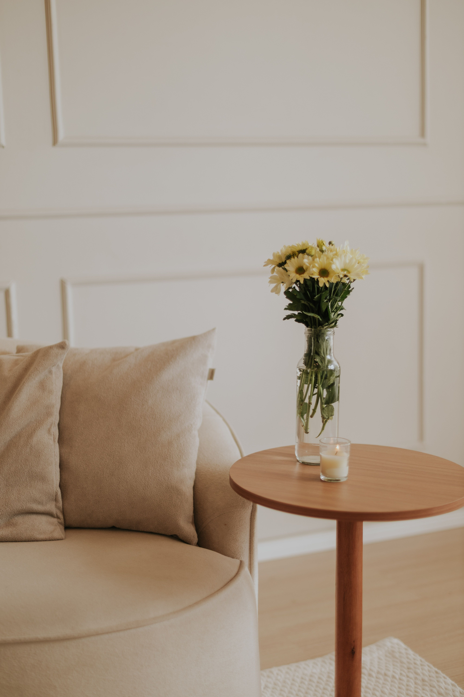
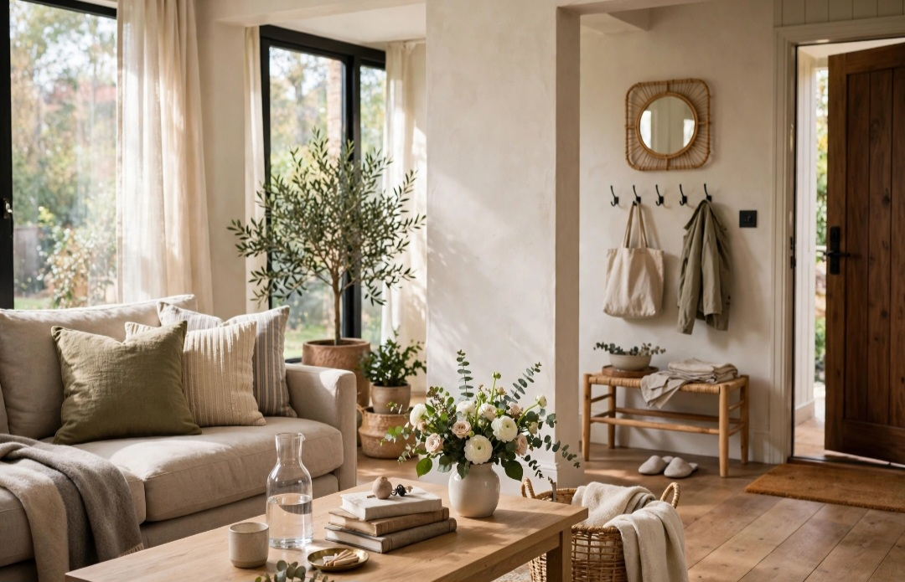

En este artículo
Introducción
Plantas de interior fáciles de cuidar: guía práctica con recomendaciones claras para elegir, cuidar y mantener mejores soluciones en casa y jardín.
La mejor forma de abordar este tema es partir de las condiciones reales del hogar y no de una solución genérica. La luz, el clima, el espacio disponible, la frecuencia de uso y el tiempo que podemos dedicar al mantenimiento cambian por completo qué opción resulta adecuada.
Esta guía desarrolla criterios prácticos para tomar decisiones con más seguridad. Además de explicar qué hacer, señala errores frecuentes y tareas de mantenimiento que ayudan a conservar el resultado. El objetivo es que la información pueda aplicarse de manera gradual, sin compras impulsivas ni intervenciones innecesarias.
Cuando una recomendación dependa de una especie, producto o condición concreta, revisa siempre las instrucciones específicas. En tareas que impliquen riesgos o conocimientos técnicos, la ayuda de un profesional cualificado es preferible a improvisar.
Qué significa realmente que una planta sea fácil de cuidar
Una planta “fácil” no es una planta que pueda vivir sin luz, agua o atención. El término describe especies capaces de tolerar cierto margen de variación y recuperarse de pequeños errores. La facilidad depende también de tu casa: una especie sencilla en un apartamento luminoso puede resultar complicada en una habitación oscura y húmeda.
Antes de comprar, identifica cuánta luz existe, cómo es la temperatura habitual y cuánto tiempo puedes dedicar al mantenimiento. Elegir una especie compatible con esas condiciones reduce mucho más el trabajo que buscar una supuesta planta indestructible. La adaptación correcta es el verdadero secreto de un cuidado sencillo.
También conviene empezar con pocos ejemplares. Aprender a reconocer el peso de una maceta seca, la apariencia de una hoja saludable y la velocidad normal de crecimiento resulta más fácil con una colección pequeña. Después podrás incorporar nuevas especies con necesidades similares.
Planificar antes de actuar evita la mayoría de los problemas. Observa las condiciones durante varios días, anota cambios de luz, humedad o uso y decide qué resultado buscas. Esta información permite elegir especies, materiales y rutinas compatibles con el espacio real en lugar de copiar una solución que funcionó en otro hogar.
Trabaja de forma gradual. Introducir pocos cambios y observar su efecto permite corregir a tiempo sin gastar de más. En jardinería y plantas de interior, una modificación puede tardar días o semanas en mostrar resultados, por lo que conviene evitar varias intervenciones simultáneas.
Opciones resistentes para principiantes
Sansevierias, zamioculcas y pothos aparecen con frecuencia entre las recomendaciones para principiantes porque toleran cierta irregularidad en el cuidado. Las sansevierias almacenan agua en sus tejidos y sufren cuando se riegan en exceso. Las zamioculcas también prefieren que el sustrato no permanezca constantemente húmedo. Los pothos ofrecen señales visibles cuando las condiciones se alejan de lo ideal y crecen bien con buena luz indirecta.

Las plantas araña o cintas son otra opción popular y producen hijuelos que permiten multiplicarlas. Algunas peperomias compactas funcionan bien en espacios pequeños. Cada variedad conserva requisitos propios, de modo que la etiqueta “fácil” nunca sustituye a conocer la especie concreta.
Si convives con animales, comprueba la seguridad antes de colocar cualquier planta a su alcance. Algunas especies muy comunes en interior pueden ser tóxicas si se mastican. Consulta fuentes veterinarias fiables y adapta la selección a las circunstancias del hogar.
Trabaja de forma gradual. Introducir pocos cambios y observar su efecto permite corregir a tiempo sin gastar de más. En jardinería y plantas de interior, una modificación puede tardar días o semanas en mostrar resultados, por lo que conviene evitar varias intervenciones simultáneas.
La limpieza forma parte del mantenimiento. Herramientas limpias, recipientes sin agua estancada y superficies despejadas reducen problemas y facilitan detectar señales tempranas. No hace falta utilizar productos agresivos cuando una limpieza sencilla y regular es suficiente.
Riego sencillo sin calendarios rígidos
El exceso de agua mata más plantas de interior que un pequeño retraso ocasional. En vez de regar todos los domingos, comprueba la humedad. Introduce un dedo varios centímetros cuando el tipo de sustrato lo permita, levanta la maceta para notar su peso y observa si la capa superficial continúa húmeda.
Cuando toque regar, humedece el sustrato de manera uniforme y permite que el exceso salga por los agujeros. Vacía platos y cubremacetas. Una pequeña cantidad diaria de agua puede mantener únicamente la superficie húmeda y favorecer problemas, mientras que un riego completo seguido de un periodo adecuado de secado suele imitar mejor las necesidades de muchas especies.
En invierno o con menor luz, el sustrato puede tardar más en secarse. Ajusta la frecuencia en lugar de mantener la rutina de verano. Si dudas, observa la planta y el sustrato antes de añadir más agua.
La limpieza forma parte del mantenimiento. Herramientas limpias, recipientes sin agua estancada y superficies despejadas reducen problemas y facilitan detectar señales tempranas. No hace falta utilizar productos agresivos cuando una limpieza sencilla y regular es suficiente.
La seguridad debe mantenerse por encima de la estética. Asegura macetas, estanterías y soportes; evita obstáculos en zonas de paso y utiliza herramientas conforme a sus instrucciones. Cuando exista riesgo eléctrico, estructural, trabajo en altura o una situación que exceda una tarea doméstica normal, recurre a profesionales.
Luz, limpieza y pequeñas tareas de mantenimiento
Coloca las plantas cerca de la luz adecuada y evita moverlas constantemente. Un cambio brusco desde sombra a sol directo puede quemar hojas. Cuando necesites mejorar la exposición, hazlo de forma gradual. Gira la maceta cada cierto tiempo si el crecimiento se concentra hacia un lado.

El polvo se acumula en las hojas y oculta señales tempranas de plagas. Límpialas con suavidad y aprovecha para revisar tallos y envés. Retira hojas completamente secas con herramientas limpias. No es necesario podar una planta saludable solo para estar “haciendo algo”.
Trasplanta cuando existan señales reales, como raíces que ocupan completamente el recipiente, dificultad para retener agua o crecimiento claramente limitado. Pasar directamente a una maceta enorme no acelera el crecimiento y puede aumentar el riesgo de exceso de humedad.
La seguridad debe mantenerse por encima de la estética. Asegura macetas, estanterías y soportes; evita obstáculos en zonas de paso y utiliza herramientas conforme a sus instrucciones. Cuando exista riesgo eléctrico, estructural, trabajo en altura o una situación que exceda una tarea doméstica normal, recurre a profesionales.
Una solución sostenible es aquella que puedes mantener. Calcula cuánto tiempo requiere el cuidado semanal y evita crear una rutina demasiado compleja. Menos elementos bien atendidos suelen ofrecer un resultado más atractivo que una colección grande que empieza a deteriorarse.
Crear una rutina que sea fácil de mantener
Agrupa mentalmente las plantas por necesidades, no solo por habitación. Puedes revisar primero las que prefieren secarse más y después las que requieren humedad algo más regular. Esta organización evita aplicar el mismo cuidado a todas. Una revisión semanal no significa regar semanalmente; significa observar.
Mantén a mano una regadera, un paño y unas tijeras limpias. Tener herramientas sencillas disponibles reduce la tentación de posponer tareas pequeñas. Anota la fecha de trasplantes o tratamientos importantes, pero utiliza la observación para decidir los riegos.
El objetivo de una colección fácil es disfrutar de las plantas sin convertirlas en una obligación complicada. Seleccionar especies adecuadas, evitar el exceso de intervenciones y reaccionar pronto ante cambios visibles crea una rutina estable que puede mantenerse durante años.
Una solución sostenible es aquella que puedes mantener. Calcula cuánto tiempo requiere el cuidado semanal y evita crear una rutina demasiado compleja. Menos elementos bien atendidos suelen ofrecer un resultado más atractivo que una colección grande que empieza a deteriorarse.
Revisa el resultado unas semanas después. Comprueba qué ha funcionado, qué tarea se repite demasiado y dónde aparece una dificultad inesperada. Ajustar el sistema a partir de la experiencia real es más eficaz que perseguir una configuración perfecta desde el primer día.

Revisión práctica y mantenimiento a largo plazo
Después de aplicar los cambios, observa el resultado durante varias semanas. Comprueba si la rutina es realmente cómoda, si el espacio sigue funcionando y si aparecen señales que indiquen exceso de agua, falta de luz, humedad, desgaste o cualquier otro problema relacionado con el tema. Una revisión temprana permite corregir detalles pequeños antes de que exijan una intervención mayor.
Mantén un registro sencillo cuando sea útil. Anotar fechas de siembra, trasplante, limpieza profunda, aplicación de un producto o cambio de ubicación facilita entender la evolución. No es necesario convertir el cuidado de la casa en una tarea burocrática; unas pocas notas pueden evitar repetir errores.
Prioriza el mantenimiento preventivo. Limpiar, revisar fijaciones, retirar material deteriorado y comprobar drenajes suele requerir pocos minutos y prolonga la vida de plantas, muebles y espacios. Esperar a que el problema sea evidente normalmente aumenta el trabajo.
Finalmente, conserva solo las rutinas que aporten un beneficio claro. Si una solución exige demasiado tiempo para el resultado que ofrece, simplifícala. Un hogar agradable y un jardín saludable deben adaptarse a la vida cotidiana y no convertirse en una fuente constante de tareas.
Consejos adicionales para conseguir un resultado consistente
Antes de añadir una nueva tarea a tu rutina, pregúntate qué problema resuelve. Esta sencilla comprobación ayuda a evitar cuidados excesivos, compras duplicadas y cambios realizados únicamente por costumbre. Una acción pequeña y bien justificada suele ser más útil que muchas intervenciones sin un objetivo claro.
Observa también cómo cambia el entorno con las estaciones. Temperatura, horas de luz, ventilación y humedad pueden modificar las necesidades de plantas y materiales. Lo que funcionó durante meses cálidos quizá necesite ajustes cuando llegan días más fríos o con menos luz.
Cuando pruebes una solución nueva, aplícala primero a pequeña escala. Esto permite comprobar su efecto antes de extenderla al resto del espacio. Si el resultado es positivo, podrás repetirla con mayor confianza; si no funciona, corregirla será más sencillo.
La constancia supera a las acciones intensivas y esporádicas. Revisiones breves y regulares permiten mantener orden, detectar cambios y actuar pronto. Este principio reduce el esfuerzo acumulado y ayuda a conservar un aspecto cuidado durante más tiempo.
Por último, evita comparar tu casa o jardín con imágenes preparadas exclusivamente para fotografía. Un espacio real debe permitir movimiento, limpieza, crecimiento y uso cotidiano. La mejor solución es la que sigue funcionando cuando termina la sesión de fotos y comienza la vida diaria.
Preguntas frecuentes
¿Cuál es la mejor manera de empezar?
Empieza observando las condiciones reales relacionadas con plantas de interior fáciles de cuidar, define una prioridad y evita comprar o modificar elementos antes de conocer el espacio.
¿Cuánto tiempo se necesita para ver resultados?
Depende del tema y de las condiciones. Algunas mejoras son inmediatas, mientras que el crecimiento de las plantas, el compostaje o la adaptación a una nueva rutina requieren semanas o meses.
¿Qué errores deberían evitarse?
Evita aplicar la misma solución a todas las situaciones, excederte con agua o productos, ignorar drenaje y seguridad, y realizar cambios simultáneos que impidan saber qué está funcionando.
¿Es necesario gastar mucho dinero?
No necesariamente. Observar, reutilizar recursos, elegir bien desde el principio y mantener de forma preventiva suele reducir gastos y evita compras innecesarias.
¿Cuándo conviene pedir ayuda profesional?
Cuando haya riesgos eléctricos, estructurales, trabajos en altura, problemas importantes de plagas o cualquier situación que no pueda resolverse con seguridad mediante mantenimiento doméstico normal.
Conclusión
Plantas de interior fáciles de cuidar puede abordarse con mejores resultados cuando primero se observan las condiciones, después se eligen soluciones compatibles y finalmente se establece una rutina de mantenimiento sencilla.
No es necesario transformar todo de una vez. Los cambios graduales permiten aprender del espacio, controlar gastos y detectar qué decisiones funcionan de verdad. Esta estrategia resulta especialmente útil cuando intervienen plantas y materiales vivos, cuyo comportamiento cambia con el tiempo.
Utiliza esta guía como referencia, adapta cada recomendación a tu situación y revisa periódicamente el resultado. La combinación de planificación, observación y mantenimiento suele ser más eficaz que cualquier solución rápida.